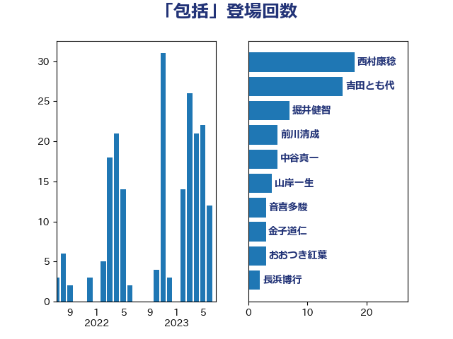

単語「包括」

| 西村康稔 | 自由民主党 | 18 回 |
| 吉田とも代 | 日本維新の会 | 16 回 |
| 掘井健智 | 日本維新の会 | 7 回 |
| 前川清成 | 日本維新の会 | 5 回 |
| 中谷真一 | 自由民主党 | 5 回 |
| 山岸一生 | 立憲民主党 | 4 回 |
| 音喜多駿 | 日本維新の会 | 3 回 |
| 金子道仁 | 日本維新の会 | 3 回 |
| おおつき紅葉 | 立憲民主党 | 3 回 |
| 長浜博行 | 無所属 | 2 回 |
| 長友慎治 | 国民民主党 | 2 回 |
| 石田昌宏 | 自由民主党 | 2 回 |
| 田中健 | 国民民主党 | 2 回 |
| 浅野哲 | 国民民主党 | 2 回 |
| 河西宏一 | 公明党 | 2 回 |
| 永岡桂子 | 自由民主党 | 2 回 |
| 森本真治 | 立憲民主党 | 2 回 |
| 森山浩行 | 立憲民主党 | 2 回 |
| 松本剛明 | 自由民主党 | 2 回 |
| 村田享子 | 立憲民主党 | 2 回 |
| 後藤茂之 | 自由民主党 | 2 回 |
| 小野泰輔 | 日本維新の会 | 2 回 |
| 大島敦 | 立憲民主党 | 2 回 |
| 倉林明子 | 日本共産党 | 2 回 |
| 高階恵美子 | 自由民主党 | 1 回 |
| 青柳陽一郎 | 立憲民主党 | 1 回 |
| 青山大人 | 立憲民主党 | 1 回 |
| 長峯誠 | 自由民主党 | 1 回 |
| 金子恭之 | 自由民主党 | 1 回 |
| 金城泰邦 | 公明党 | 1 回 |
| 野田聖子 | 自由民主党 | 1 回 |
| 近藤和也 | 立憲民主党 | 1 回 |
| 西村智奈美 | 立憲民主党 | 1 回 |
| 西村明宏 | 自由民主党 | 1 回 |
| 西岡秀子 | 国民民主党 | 1 回 |
| 自見はなこ | 自由民主党 | 1 回 |
| 米山隆一 | 立憲民主党 | 1 回 |
| 竹谷とし子 | 公明党 | 1 回 |
| 福田昭夫 | 立憲民主党 | 1 回 |
| 福島みずほ | 社会民主党 | 1 回 |
| 石川昭政 | 自由民主党 | 1 回 |
| 石原正敬 | 自由民主党 | 1 回 |
| 田村智子 | 日本共産党 | 1 回 |
| 田村憲久 | 自由民主党 | 1 回 |
| 田村まみ | 国民民主党 | 1 回 |
| 牧野たかお | 自由民主党 | 1 回 |
| 深澤陽一 | 自由民主党 | 1 回 |
| 泉田裕彦 | 自由民主党 | 1 回 |
| 池下卓 | 日本維新の会 | 1 回 |
| 松原仁 | 立憲民主党 | 1 回 |
| 末松義規 | 立憲民主党 | 1 回 |
| 星北斗 | 自由民主党 | 1 回 |
| 早稲田ゆき | 立憲民主党 | 1 回 |
| 新藤義孝 | 自由民主党 | 1 回 |
| 斉藤鉄夫 | 公明党 | 1 回 |
| 徳永久志 | 無所属 | 1 回 |
| 岸田文雄 | 自由民主党 | 1 回 |
| 山田太郎 | 自由民主党 | 1 回 |
| 山岡達丸 | 立憲民主党 | 1 回 |
| 小宮山泰子 | 立憲民主党 | 1 回 |
| 大家敏志 | 自由民主党 | 1 回 |
| 土田慎 | 自由民主党 | 1 回 |
| 吉田はるみ | 立憲民主党 | 1 回 |
| 吉川沙織 | 立憲民主党 | 1 回 |
| 原口一博 | 立憲民主党 | 1 回 |
| 加藤明良 | 自由民主党 | 1 回 |
| 加田裕之 | 自由民主党 | 1 回 |
| 佐藤正久 | 自由民主党 | 1 回 |
| 伊藤岳 | 日本共産党 | 1 回 |
| 伊佐進一 | 公明党 | 1 回 |
| 井坂信彦 | 立憲民主党 | 1 回 |
| 中谷一馬 | 立憲民主党 | 1 回 |
| ながえ孝子 | 無所属 | 1 回 |
| こやり隆史 | 自由民主党 | 1 回 |